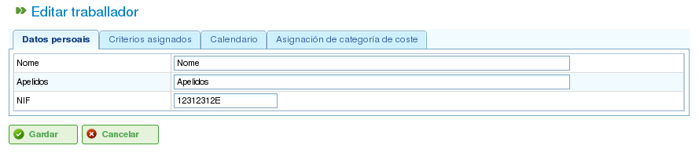

مدیریت منابع
Contents
برنامه دو نوع متمایز منابع را مدیریت میکند: کارمندان و ماشینها.
منابع کارمند
منابع کارمند نمایانگر کارکنان شرکت هستند. ویژگیهای کلیدی آنها عبارتند از:
- آنها یک یا چند معیار عمومی یا کارمندمحور را برآورده میکنند.
- میتوانند به طور خاص به یک وظیفه اختصاص داده شوند.
- میتوانند به طور عمومی به وظیفهای که به یک معیار منبع نیاز دارد اختصاص داده شوند.
- میتوانند در صورت نیاز تقویم پیشفرض یا خاص داشته باشند.
منابع ماشین
منابع ماشین نمایانگر ماشینآلات شرکت هستند. ویژگیهای کلیدی آنها عبارتند از:
- آنها یک یا چند معیار عمومی یا ماشینمحور را برآورده میکنند.
- میتوانند به طور خاص به یک وظیفه اختصاص داده شوند.
- میتوانند به طور عمومی به وظیفهای که به یک معیار ماشین نیاز دارد اختصاص داده شوند.
- میتوانند در صورت نیاز تقویم پیشفرض یا خاص داشته باشند.
- برنامه شامل یک صفحه پیکربندی است که در آن میتوان مقدار آلفا را برای نمایش نسبت ماشین/کارمند تعریف کرد.
- مقدار آلفا مقدار زمان کارمند مورد نیاز برای راهاندازی ماشین را نشان میدهد. به عنوان مثال، مقدار آلفای ۰.۵ به این معنی است که هر ۸ ساعت کار ماشین به ۴ ساعت زمان کارمند نیاز دارد.
- کاربران میتوانند مقدار آلفا را به طور خاص به یک کارمند اختصاص دهند و آن کارمند را برای آن درصد از زمان برای راهاندازی ماشین تعیین کنند.
- کاربران میتوانند همچنین یک اختصاص عمومی بر اساس معیار انجام دهند.
مدیریت منابع
کاربران میتوانند کارکنان و ماشینها در شرکت را با رفتن به بخش «منابع» ایجاد، ویرایش و غیرفعال (اما نه حذف دائم) کنند. این بخش ویژگیهای زیر را ارائه میدهد:
- فهرست کارکنان: فهرست شمارهگذاریشدهای از کارکنان را نمایش میدهد.
- فهرست ماشینها: فهرست شمارهگذاریشدهای از ماشینها را نمایش میدهد.
مدیریت کارکنان
مدیریت کارمند با رفتن به بخش «منابع» و سپس انتخاب «فهرست کارکنان» انجام میشود.
هنگام ویرایش یک کارمند، کاربران میتوانند به برگههای زیر دسترسی داشته باشند:
جزئیات کارمند: این برگه به کاربران امکان میدهد جزئیات شناسایی اساسی کارمند را ویرایش کنند:
- نام
- نام خانوادگی
- سند هویت ملی
- منبع مبتنی بر صف (به بخش منابع مبتنی بر صف مراجعه کنید)

ویرایش اطلاعات شخصی کارکنان
معیارها: این برگه برای پیکربندی معیارهایی که یک کارمند برآورده میکند استفاده میشود. برای اختصاص معیارها:
- روی دکمه «افزودن معیارها» کلیک کنید.
- معیار اضافهشونده را جستجو کنید و مناسبترین را انتخاب کنید.
- روی دکمه «افزودن» کلیک کنید.
- تاریخ شروع را که معیار از آن اعمال میشود انتخاب کنید.
- تاریخ پایان اعمال معیار به منبع را انتخاب کنید. این تاریخ در صورتی که معیار نامحدود در نظر گرفته میشود اختیاری است.

مرتبطسازی معیارها با کارکنان
تقویم: این برگه به کاربران امکان میدهد یک تقویم خاص برای کارمند پیکربندی کنند.

برگه تقویم برای یک منبع
دسته هزینه: این برگه به کاربران امکان میدهد دسته هزینهای که یک کارمند در طول یک دوره معین برآورده میکند را پیکربندی کنند.

برگه دسته هزینه برای یک منبع
اختصاص منابع در بخش «اختصاص منابع» توضیح داده شده است.
مدیریت ماشینها
ماشینها برای تمام اهداف به عنوان منابع در نظر گرفته میشوند. ماشینها از طریق ورودی منوی «منابع» مدیریت میشوند.
هنگام ویرایش ماشینها، سیستم مجموعهای از برگهها را برای مدیریت جزئیات مختلف نمایش میدهد:
جزئیات ماشین: این برگه به کاربران امکان میدهد جزئیات شناسایی ماشین را ویرایش کنند:
- نام
- کد ماشین
- توضیحات ماشین

ویرایش جزئیات ماشین
معیارها: مانند منابع کارمند، این برگه برای افزودن معیارهایی که ماشین برآورده میکند استفاده میشود.

اختصاص معیارها به ماشینها
تقویم: این برگه به کاربران امکان میدهد یک تقویم خاص برای ماشین پیکربندی کنند.

اختصاص تقویم به ماشینها
پیکربندی ماشین: این برگه به کاربران امکان میدهد نسبت ماشینها به منابع کارمند را پیکربندی کنند. مرتبط کردن یک کارمند با یک ماشین میتواند به دو روش انجام شود:
- اختصاص خاص: یک بازه تاریخی اختصاص دهید که در طول آن کارمند به ماشین اختصاص داده میشود.
- اختصاص عمومی: معیارهایی که باید توسط کارکنان اختصاصیافته به ماشین برآورده شوند را اختصاص دهید.

پیکربندی ماشینها
دسته هزینه: این برگه به کاربران امکان میدهد دسته هزینهای که یک ماشین در طول یک دوره معین برآورده میکند را پیکربندی کنند.

اختصاص دستههای هزینه به ماشینها
گروههای کارمند مجازی
برنامه به کاربران امکان میدهد گروههای کارمند مجازی ایجاد کنند که کارمندان واقعی نیستند بلکه کارمندان شبیهسازیشده هستند. این گروهها به کاربران امکان میدهند ظرفیت تولید افزایشیافته را در زمانهای خاص بر اساس تنظیمات تقویم مدلسازی کنند.

منابع مجازی
منابع مبتنی بر صف
منابع مبتنی بر صف نوع خاصی از عناصر تولیدی هستند که میتوانند یا بدون اختصاص باشند یا ۱۰۰٪ اختصاص داشته باشند. به عبارت دیگر، نمیتوانند بیش از یک وظیفه را همزمان برنامهریزی کنند و نمیتوانند بیش از حد اختصاص داده شوند.